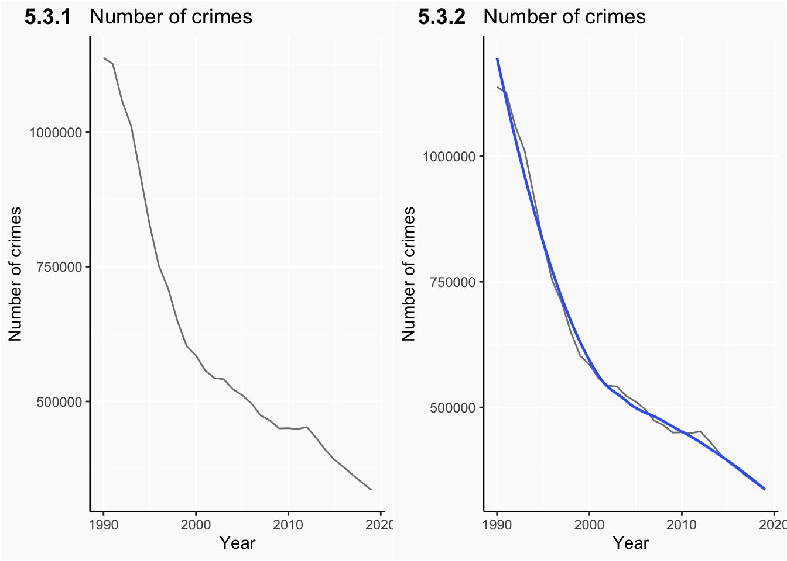

Chapter 5 Results
5.1 Trends of crimes over 30 years
After analyzing features of crimes in recent years, we want to explorer the trend of numbers of crimes from 1990 to 2019, as well as the trend of different types of crimes.

Plot 5.3.1 shows the general trend of number of crimes from 1990 to 2019. We can see crime cases reduced for about 100000 in last 30 years. It’s obvious the number of crimes is decreasing in general. And for the last 10 years of the 20th century, the number of cases dropped very rapid, with a slow drop continuing in next 20 years.
We also fitted our data to a smooth curve in plot 5.3.2. The curve is similar to an exponential function, which means it has a large gradient in first few years and has the quality of decreasing continuously.
Next we are interest in the time trend of all crime types in NY state in order to investigate which type of crime has caused the general decreasing. First we focus on two major types: violent crime and property crime.

From plot 5.3.3, we can see that the number of property crimes reduced by about 300000 from 1990 to 2000, which contributes a major part to the rapid decreasing of crime number showed in plot 5.3.1 and 5.3.2.
As a minority of crime types, violent crimes also showed large decreasing trend from 1994 with respect to its initial number in 1990. Now we can say the public safety situation improved a lot in the 1990s, which may be highly correlated to mayor Giuliani III’s policies, including increasing members in police station, and increasing investment in public safety. After 2000, these two major types of crimes both decreased slowly, which is consistent with the general trend.
To further explorer the trends of all crimes, we darw the time series chart for all types of crimes as follows,

Plot 5.3.4 shows the time trends for all types of crimes from 1990 to 2019. It tells us the numbers of larceny, burglary, motor/vehicle theft decreased rapidly. However, it’s difficult to acquire trends when the number of a variable is small such as murder and rape.
To solve this problem, plot 5.3.5 provides index information about each type of crimes. Now small changes which may be difficult to examine can be find in plot 5.3.5. First, the numbers of all crime types decreased from 1990 to 2000, which is consistent with our analysis of plot 5.3.3. The largest number decreasing with respect to index is motor/vehicle theft, followed by muerder, burglary, aggravated assault and larceny. However, the number of rape cases started to oscillate after 2000, and even increased by a lot after 2013 while all other types decreased. Moreover, its trend is till going up in recent few years. It tells us though the public security situation seems to getting better, it’s still unsafe for women in New York compare with even 30 years ago. The reason behind increasing number of rape cases may reflect deeper social problems such as gender discriminate. We still need better policies to defend the rights of women in NY state.